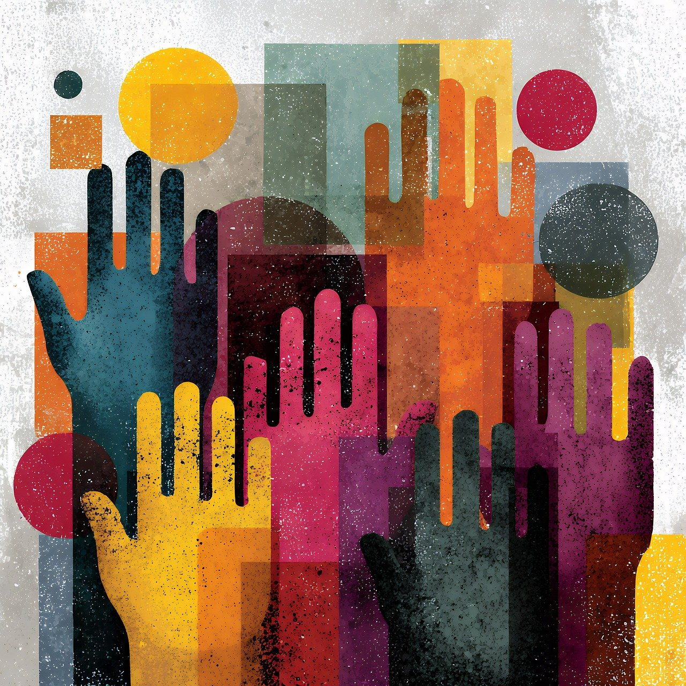

Leadership
The Quiet Power of Helping Other Leaders
In 2009 I was running a charity for vulnerable women in Stockton on Tees. A single conversation about sharing knowledge changed how I understood leadership.

Community
When Good Leaders Feel Like They're Carrying It Alone
A phone call from an old colleague running a local boxing club — and what his quiet exhaustion reveals about grassroots leaders everywhere.

Funding
Funders Should Not Penalise AI-Supported Grant Applications
AI may be one of the most important equity levellers we have seen in decades. So why are we debating whether to penalise its use?

Funding
Designing Funding Systems That Truly Widen Access
If AI is a sector-shaping moment, it is also a design opportunity — funders could actively build equity into their own processes.
More on the way — we'll be sharing more stories, insights, and practical guides here.